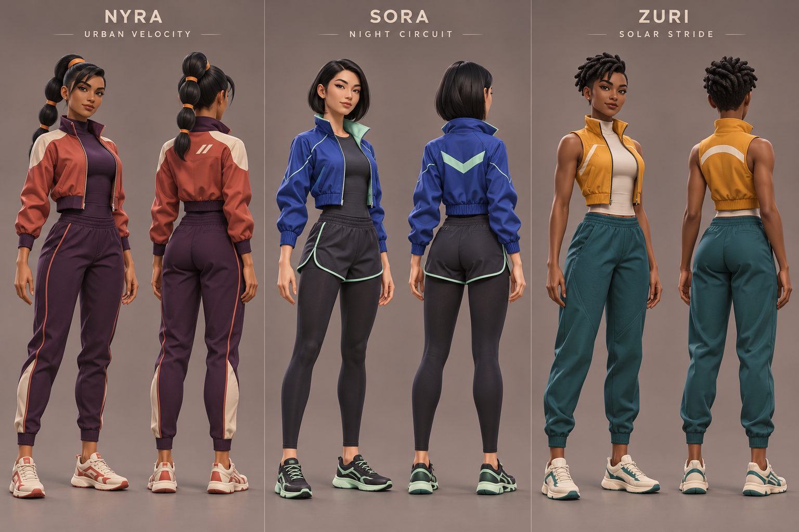
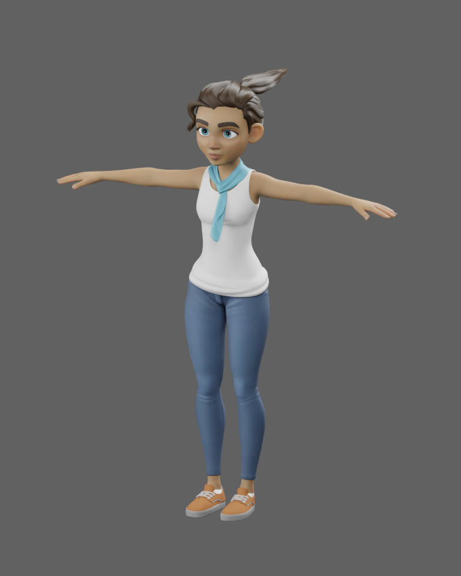
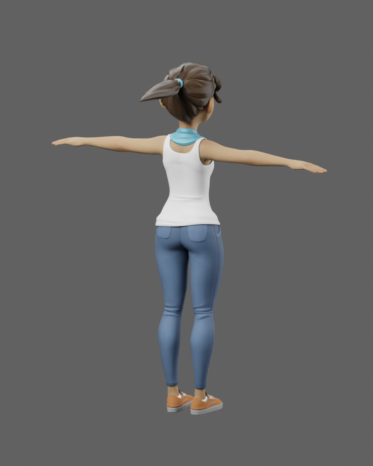

Three directions. One runner.
GENERATED CONCEPT ART · NOT 3D OUTPUT
Selected: NYRA. Coral shoulder panels, plum trackwear and a segmented ponytail. Shorten the ponytail and simplify sneaker details for gameplay.
Foundation inspection
REAL BLENDER ASSETRain is the selected editable foundation. These images show the unmodified character with inspection lighting. NYRA’s sculpt, wardrobe and game rig are future production work.


Rain Rig (CC) Blender Foundation | studio.blender.org · CC BY 4.0. Inspection renders change lighting, camera and subdivision level.
GLB inspection bench
LOCAL · NO UPLOADSStatic Rain geometry with one clay material. No rig, textures or animation. This is not the NYRA character.
Loading viewer…